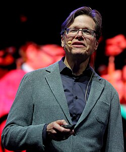

David L. Donoho | |
|---|---|
 Donoho at the ICM 2018 | |
| Born | March 5, 1957 Los Angeles, California, United States |
| Alma mater | Princeton University (BA) Harvard University (PhD) |
| Awards | Shaw Prize (2013) Gauss Prize (2018) |
| Scientific career | |
| Fields | Statistics |
| Institutions | Stanford University University of California, Berkeley |
| Peter J. Huber | |
Doctoral students | Emmanuel Candès Jianqing Fan |
David Leigh Donoho (born March 5, 1957) is an American statistician. He is a professor of statistics at Stanford University, where he is also the Anne T. and Robert M. Bass Professor in the Humanities and Sciences.[1] His work includes the development of effective methods for the construction of low-dimensional representations for high-dimensional data problems (multiscale geometric analysis), development of wavelets for denoising and compressed sensing. He was elected a Member of the American Philosophical Society in 2019.
Donoho did his undergraduate studies at Princeton University, graduating in 1978.[2] His undergraduate thesis advisor was John W. Tukey.[3] Donoho obtained his Ph.D. from Harvard University in 1983, under the supervision of Peter J. Huber.[4] He was on the faculty of the University of California, Berkeley, from 1984 to 1990 before moving to Stanford.
He has been the Ph.D. advisor of at least 20 doctoral students, including Jianqing Fan and Emmanuel Candès.[4]
In 1991, Donoho was named a MacArthur Fellow.[5] He was elected a Fellow of the American Academy of Arts and Sciences in 1992.[6] He was the winner of the COPSS Presidents' Award in 1994. In 2001, he won the John von Neumann Prize of the Society for Industrial and Applied Mathematics.[7] In 2002, he was appointed to the Bass professorship.[2] He was elected a SIAM Fellow[8] and a foreign associate of the French Académie des sciences[9] in 2009, and in the same year received an honorary doctorate from the University of Chicago.[1] In 2010 he won the Norbert Wiener Prize in Applied Mathematics, given jointly by SIAM and the American Mathematical Society.[10] He is also a member of the United States National Academy of Sciences.[2][11] In 2012 he became a fellow of the American Mathematical Society.[12] In 2013 he was awarded the Shaw Prize for Mathematics.[13] In 2016, he was awarded an honorary degree at the University of Waterloo.[14] In 2018, he was awarded the Gauss Prize from IMU.
_(cropped).jpg){kind=link}